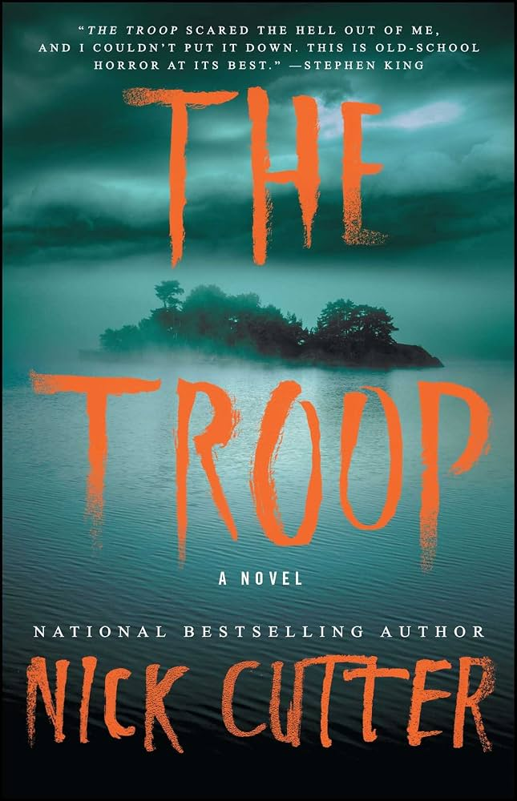

The troop
Auteur : Nick Cutter
Genre: Horreur
Année de publication: 2014
Langue: Anglais et français (titre VF : Troupe 52)

Sommaire
5 adolescents partent camper sur une petite île isolée, au large de l’Île-du-Prince-Édouard, avec leur chef scout Tim, qui est aussi médecin.
Une nuit, un inconnu arrive sur l’île. Il est terriblement maigre, affamé et a l’air malade. Tim décide de l’aider. Sauf que cet inconnu est plus malade que Tim croit.
Il initie une intervention chirurgicale improvisée pour essayer de sauver l’homme et ce qu’il découvre en ouvrant son abdomen? Des vers... mais il est déjà trop tard.
Critique
Terrifiant! Non seulement la peur de mourir venant d’un parasite inconnu, mais d’appeler de l’aide qui ne vient pas!
Heureusement qu’ils sont scouts et qu’ils ont quelques notions de survie, mais je ne sais pas comment j’aurais réagi à leur place!
Moment favori
La peur, je me mettais dans la situation des ados, et j’aurais paniquer beaucoup plus qu’eux!
Moment moins fort
Il y a quelques longueurs